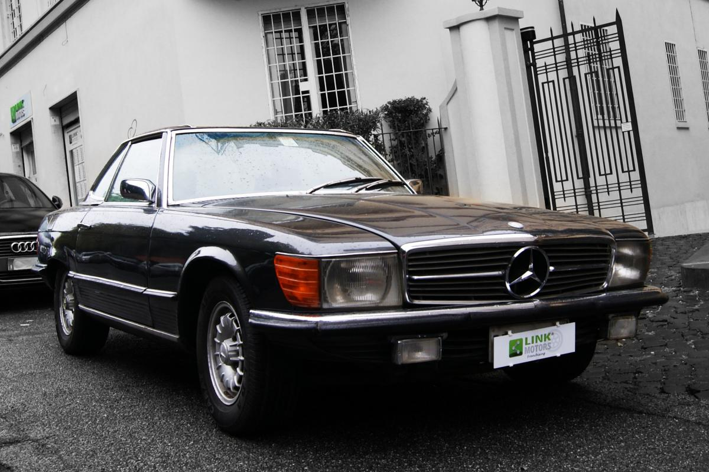
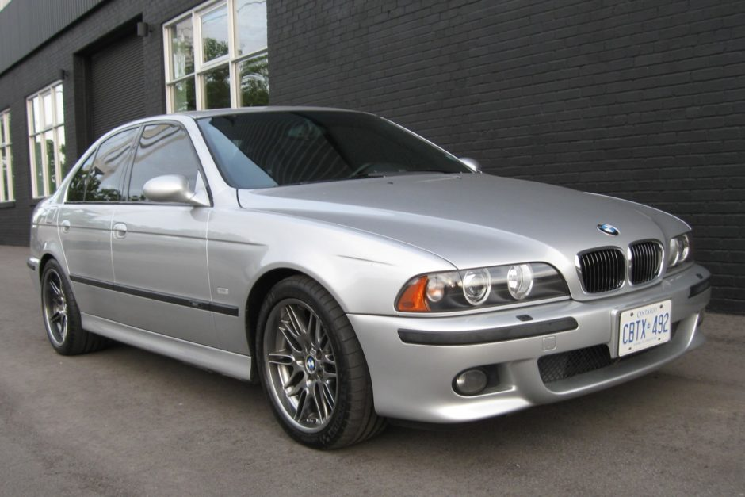

Mercedes SL 560 1989 |
|
|---|---|
| 
more images |
Mercedes-Benz SL (от нем. Super Leicht — «супер лёгкий») — серия лёгких спортивных автомобилей люкс-класса немецкой автомобильной марки Mercedes-Benz, выпускающихся с 1954 года. Идея создания принадлежит Максу Хоффману, импортёру люксовых европейских автомобилей в США 1950-х годов, который оценил возможности продаж модели с учётом наличия состоятельных любителей автомобилей класса Gran Turismo на быстро развивающемся послевоенном американском рынке, который и по сей день остаётся основным рынком сбыта для SL-класса. Обозначение «SL» впервые было применено к модели Mercedes-Benz 300 SL, которую часто именуют «Gullwing» из-за её дверей, схожих с крыльями чайки. В настоящее время SL-класс насчитывает шесть поколений автомобилей в многочисленных конфигурациях двигателей, в том числе и высокопроизводительные модификации от подразделения Mercedes-AMG. |
BMW M5 |
|
|---|---|
| 
more images |
BMW M5 — доработанная подразделением BMW Motorsport версия автомобиля BMW пятой серии. Первое поколение было представлено в 1986 году. Последующие поколения M5 сменялись совместно с каждым поколением автомобилей пятой серии, включающей E34, E39, E60/61, F10. С началом производства модели G30, после поступления первых заказов, с марта 2018 года началось также производство её M-версии. |